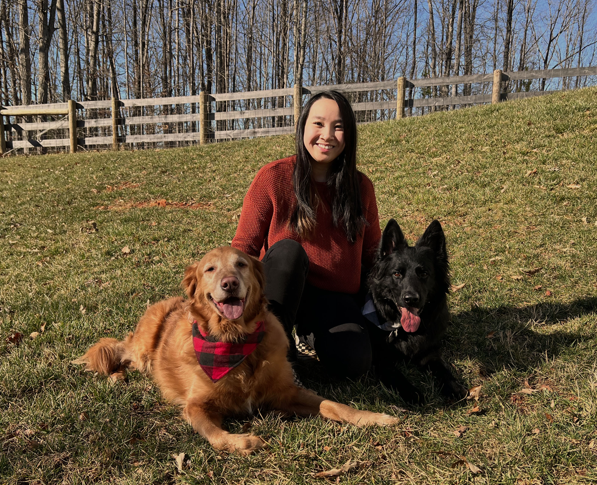
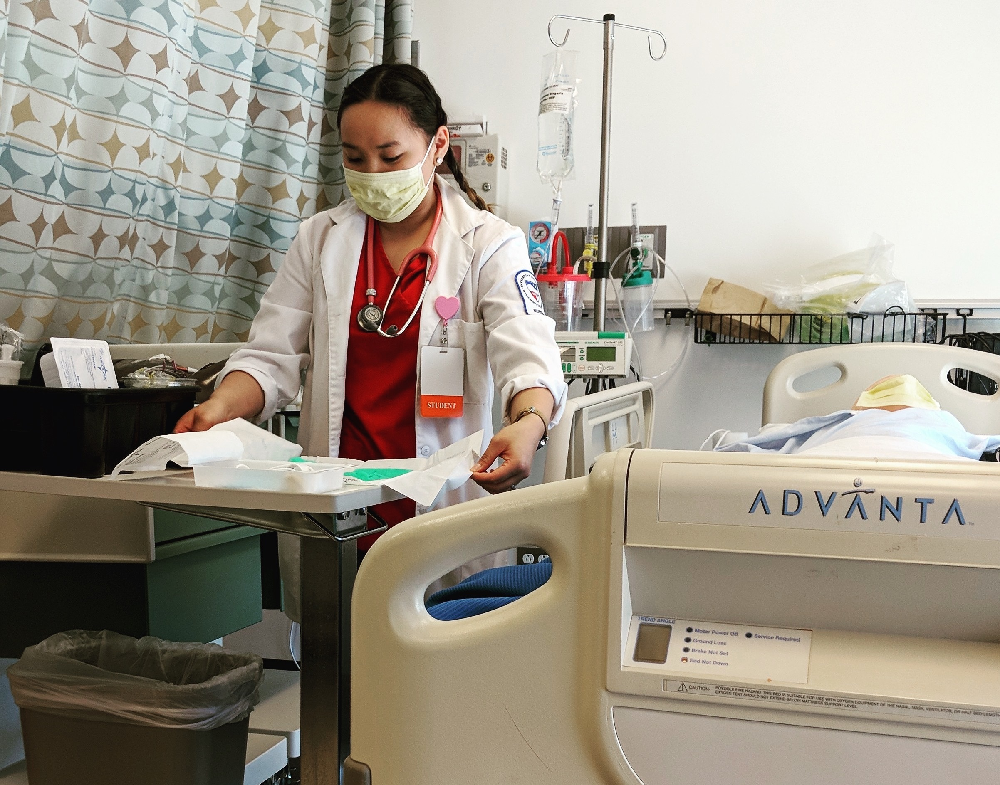
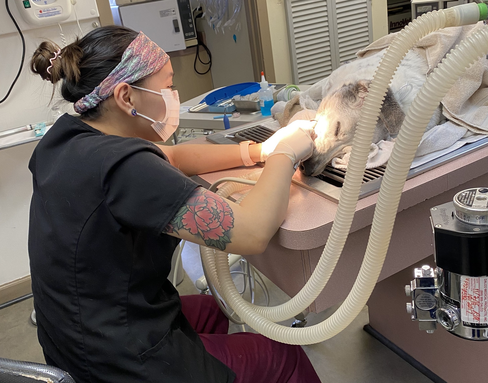

About Me
Hello! My name is Lynh Casidy and I will give you some insight on my experiences, skills, and overall background of who I am. In March 2023, I will be gradating with my Bachelor of Science in Software Development from Western Governors University(WGU). At WGU, I learned the basics of data management, project management, UI/UX design, and programming languages such as SQL, Java, C++, and HTML/CSS. I currently reside in Culpeper, Virginia with my husband and my two dogs, Orion the Golden Retriever and Atlas the German Shepherd.
Career Background
Internet Safety Evaluator/Quality Rater
Currently, I work remotely as an Internet Safety Evaluator/Quality Rater for Telus International while going to school full-time. With this job, I assist with the enhancement of AI-powered technology by improving search engine results and training digital assistants to understand more languages and dialects. This is my first step in the IT world and has introduced me to search engine optimization and quality control.
Medical Assistant/Nursing
 Prior to going to WGU, I went to school to become a Medical Assistant and then further progressed myself in the medical field by going for my Bachelor's in Nursing. I finished most of my nursing curriculum, but decided to leave the school after realizing my lack of enjoyment for the career. I went into the medical field to help others, but I didn't feel like I got to help others as much as I wanted. Due to a nursing shortage, nurses had less time to spend with patients because they had five or six others to care for. I saw a lot of repeat patients in the hospital and it all could have been prevented if nurses were able to have the time to sit down and give proper patient education.
Veterinary Technician
 After leaving nursing school, I went to work with animals as a Veterinary Technician. I only knew medicine, so I figured that I'd try it out to see if I liked the animal setting better. In 2020, the pandemic hit and the medical field was booming, even in the animal field since owners were home to notice if their pets were sick. I absolutely loved my job, but it was an emotionally taxing job. During the pandemic, we were short-staffed and with the large influx of patients, we had to turn down a lot of clients and refer them to a different hospital. I started losing enjoyment during this time because it felt like I was dismissing animals and people who truly needed help. This made me realize that maybe the healthcare field as whole was not for me due to the similar feeling I had while in nursing school. I needed a change, so I made the switch into Information Technology. I have always been interested in tech, so I revisited the idea of becoming a software developer. Now, here I am today, studying software development!
Graphic Design and Freelance Artist/Baker
Before studying and working in the medical field, I was doing graphic designing. My highschool was focused on career and technical education. For four years, I studied graphic designing along with the general high school education. The graphic design curriculum taught me how to work in Adobe Photoshop, InDesign, Illustrator, and Premiere Pro. The curriculum also taught me television broadcasting skills and web communication. Along with my school curriculum, I would code in HTML to edit my personal profiles on social media as a hobby. I also learned how to use JASC Animation to create GIFs for Instant Messenger and would share my creations for others to use. After high school, I would do small projects for friends and family to continue having a creativity outlet. My commisioned work were mostly of household items or baked goods. I have even been commissioned to make dog treats for a dog park event and a doggie daycare. To this day, I still enjoy creating art whether it be graphic designing, creating a website, editing photos, painting, creating household projects, or decorating baked goods.

RESUME PORTFOLIO